Flowing Fields
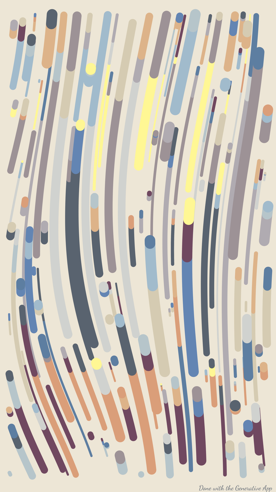
This is my best and most versatile generative art algorithm up to date. It is heavily inspired by Tyler Hobbs’ work in Fidenza. It has more than 20 parameters to play with so the results can vary a lot. You can find the collection in OpenSea.
The algorithm is based on the canvas_flow function in the aRtsy package developed by Koen Derks. That function draws a flowfield in the canvas using ggplot2 as the core engine.
From that base ground I started adding parameters and features to the basic function. I will explain most of them in the next lines.
Stroke Style
One of the first features I worked on is the stroke style. The basic function worked with random stroke sizes and using a rounded segment to connect the coordinates of the line. With this way of plotting, the lines end up having a brushstroke feel. So by tweaking the code a little bit I was able to add a parameter to select whether to connect the dots using a squared stroke or a rounded one.
Then, I thought that the rounded strokes looked a bit similar to pipes, so I ended up adding the pipes and pipes reverse stroke styles, which consist basically in adding dots at the start or end of the lines simulating the hole of the pipes. Here the trick is that ggplot draws the lines all at once, so the holes of the pipes might look weird if the lines overlap. So to fix that the algorithm plots each pair of line-hole one by one, making the depth to feel more ‘realistic’. The same dot-line pair is used to make the circle ending style of stroke. The difference is that the circle is placed in both start and end of the line and it is bigger than the stroke of the line.
The last type of stroke style is not actually a stroke, by changing the geom_segment function to geom_point in ggplot and making the step size of the iterations fixed we get the dots stroke style.
Some examples of the types of stroke styles are shown below.
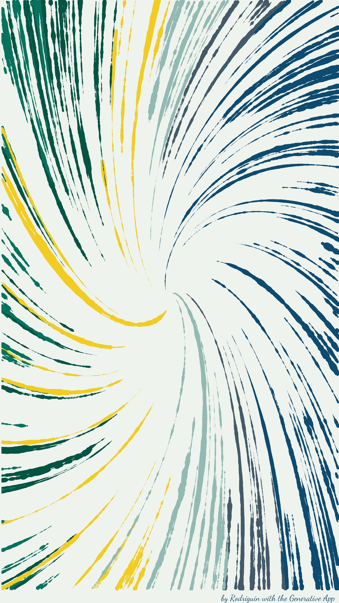
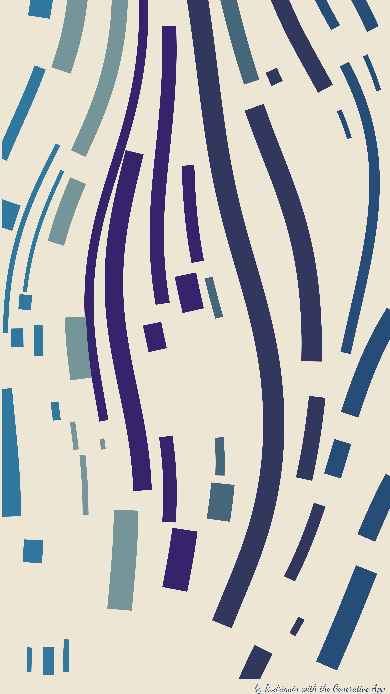

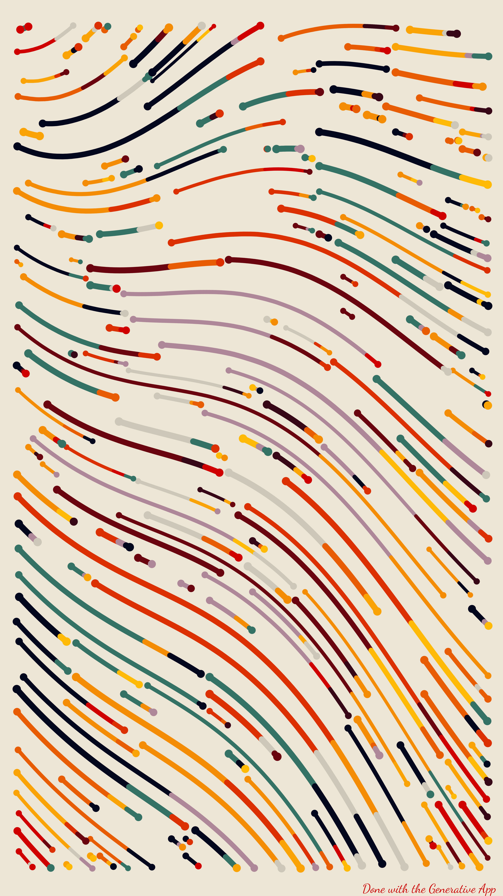
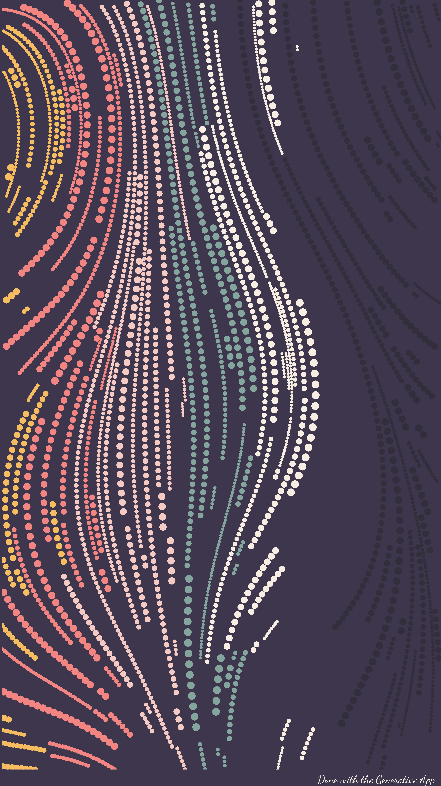
Collision Check
Next I started working on the collision check for the lines drawn. Now there are three levels of collision to check (big, small and none). If it is one of the first two, the algorithm checks if the line it is currently drawing is about to collide to any of the previous lines drawn. The trick here is to also take into account the stroke size of the lines. And this is really tricky because the Flowing Fields algorithm consists of two parts, a C++ part which iterates to calculate the flow of each line, and the R algorithm that works with the color assignment and plotting of the lines. It is tricky because the C++ does not know the stroke size of the actual plotted lines and in terms of the X and Y axis. That way, the collision check has a bit of randomness, or beautiful imperfection if I may, in the way that even if the check is big, for big thick lines may still overlap. BEAUTIFUL. The pictures below show the differences between the three types of collision checks.
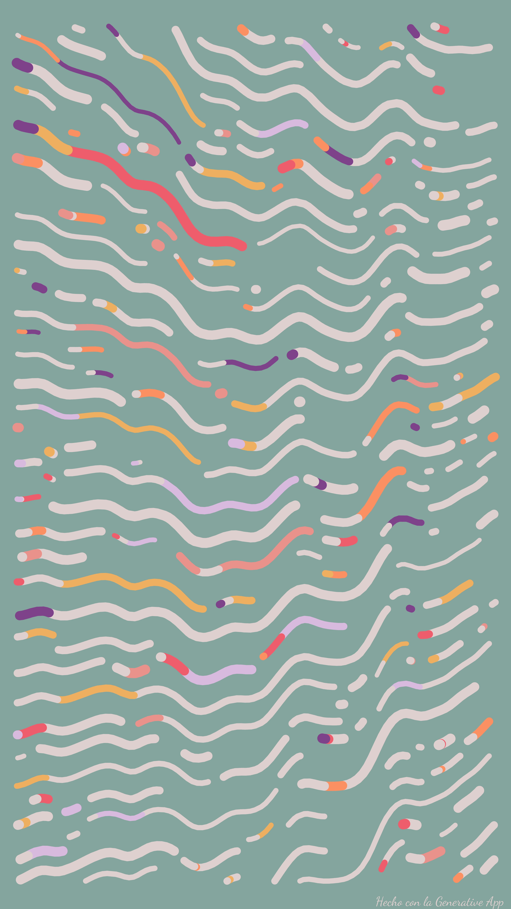
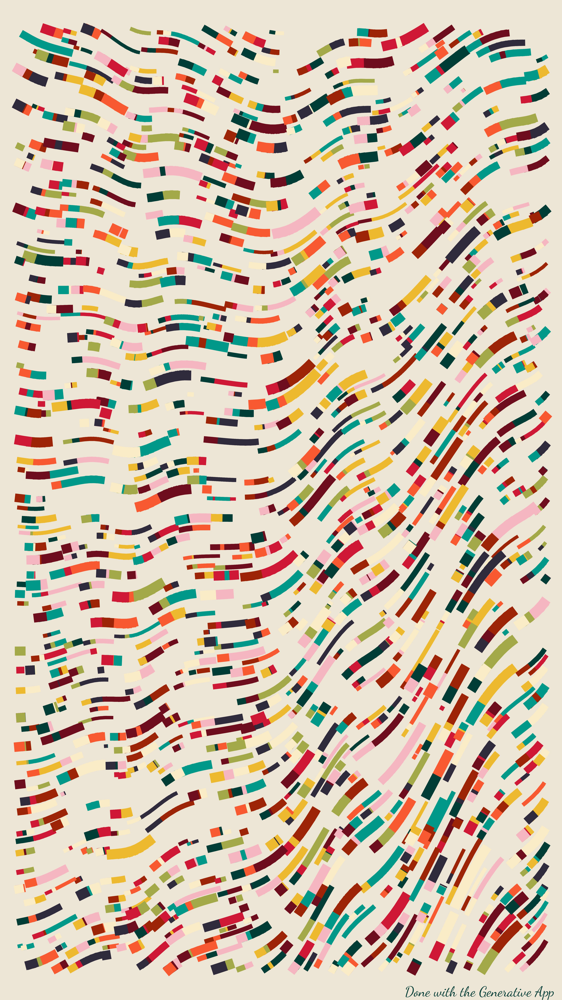
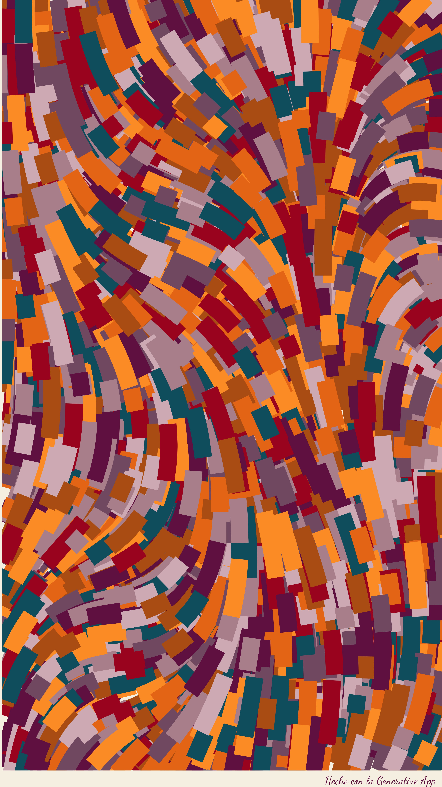
Color
This is more of a constantly evolving feature than a discrete step. Different color palettes and ways of assign colors to the lines are constantly being added, probably because it is fun and because in many cases it is somewhat easy to add a new possibility to the algorithm. I will just comment on the ways of defining a color palette or a method to assign color to lines.
Color palettes
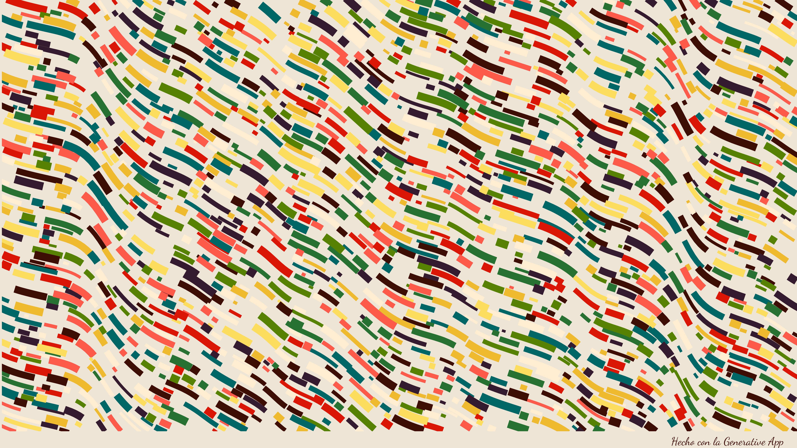
The aRtsy package has a lot of color palettes, my favorite is called Mixer 2 (I even have a printed flowfield with that palette at home). With the base ground set by Koen Derks I started experimenting with colors, the main sources of inspiration come from food, landscapes and music. That way I came up with the Vegan Tacos, City Sunset or Fire Arcade palettes for example. Yes, naming the palettes is also very fun.
Color assignment
The way of assigning color to the lines is also a ever evolving process. The first ways of assigning color I added are the Smooth ones Those just assign the color according to the mean position of the line. It can be in terms of the X or Y axis, and also in terms of a radial distance from a given point of the canvas. Color can also be assigned in terms of the starting or ending position of the line.
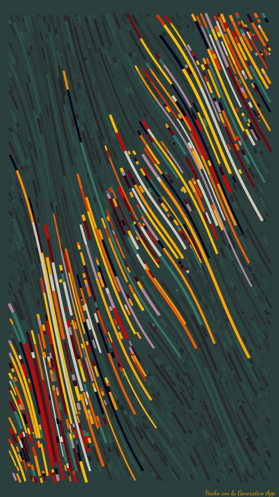
The last methods added are the ones that set just a dash, a stroke or a strip of color. They just assign the color palette to a given set of lines. The coloured lines are chosen in terms of size or position. The remaining lines are painted with colors that are similar to the background of the canvas or in shades of grey (yup, like the book).
Single Stroke Color
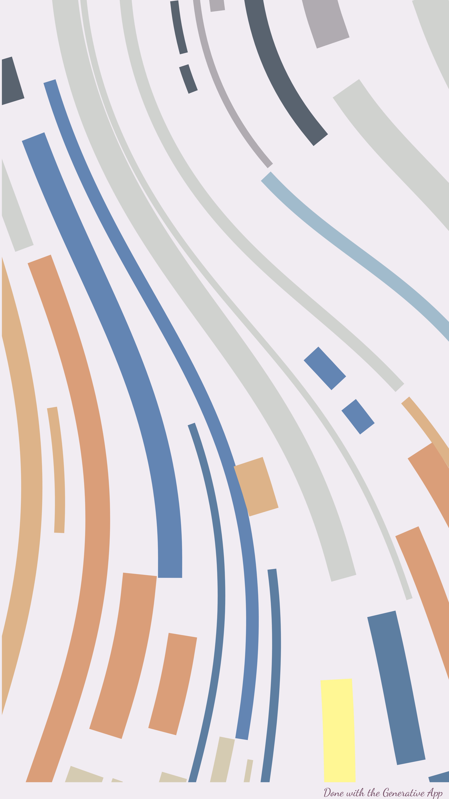
Inspired by the Fidenza collection I set a parameter that defines whether the lines can change color or not. If it is true, the lines can have up to three different colors. In the case of the color assignment methods that adds just a bit of color, the lines can have up to four colors, and the remaining lines can have many colors as well, but always in shades of grey or shades of the background color.
Predominant Color
If true, a color has 2 out of 3 chances to get assigned. The rest of the palette shares the remaining chances.
Flow
This parameter sets the flowing of the fields, it sets the way the lines will move through the canvas. The initial function had many algorithms to generate the angles according to which the lines will turn. The ones that I use the most are support vector machines (SVM) and K nearest neighboors (KNN). I added the spiral and straigth flows, with their Perlin noise modifications.
The speed of the spiral and the frequency of the perlin noise are parameters that can be modified.
The rest of the fun parameters
The rest of the parameters the Flowing Fields algorithm has to amuse ourselves are these ones:
- Orientation: portrait or landscape
- Number of lines: the number of lines that will be drawn in the canvas.
- Iterations: number of times the C++ algorithm moves the lines.
- Max step: maximum size of the random step the lines take in each iteration.
- Empty radius: whether or not the canvas has an empty spot. That space can be filled with a circle. Position and size of that circle are also parameters.
- Maximum and minimum stroke size: range from which the stroke size of the lines are randomly drawn.
- Maximum length of the lines: the lines can be set to have a maximum length that will stop the iteration for that line.
- Size of the portion of the canvas with color: this parameter applies only in the case of the color assignment method that only adds color to some lines.
- Margin: whether the canvas has margin or not.
- Signature: you can put your signature at the bottom of the artwork. My artistic name is Rodriguin.
The algorithm itself is wrapped inside an R Shiny app (The Generative App) that makes it easier to play with it. That’s all there is to the Flowing Fields algorithm and the Generative App. Hope you found it interesting.
Remember you can check the full collection in OpenSea.